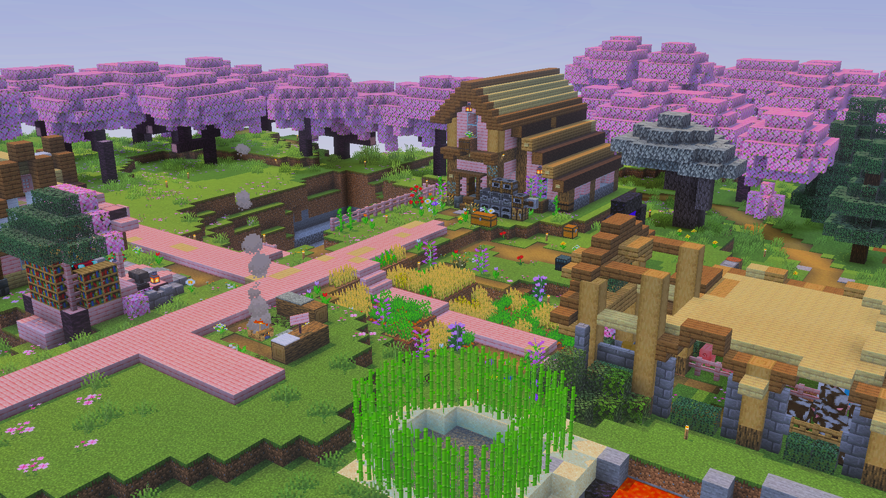
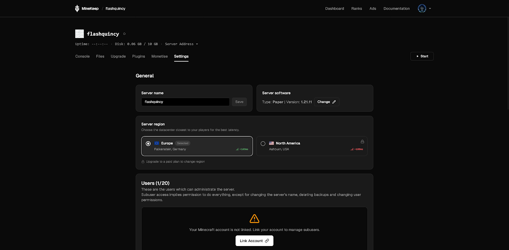
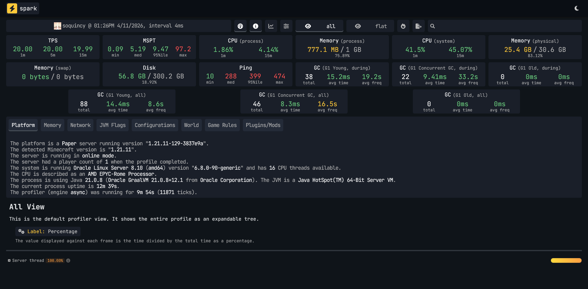
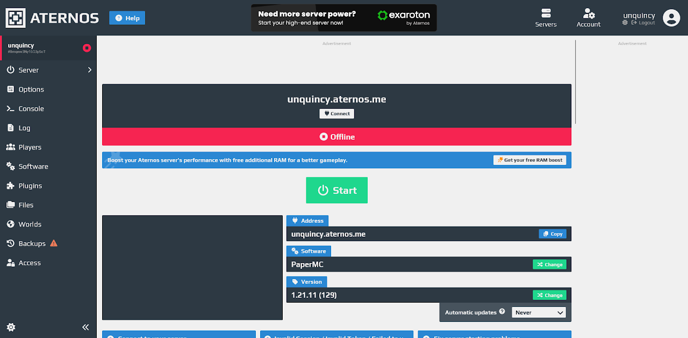
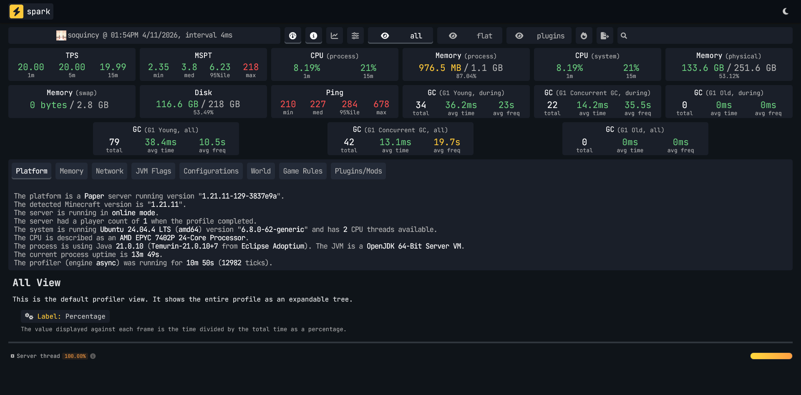
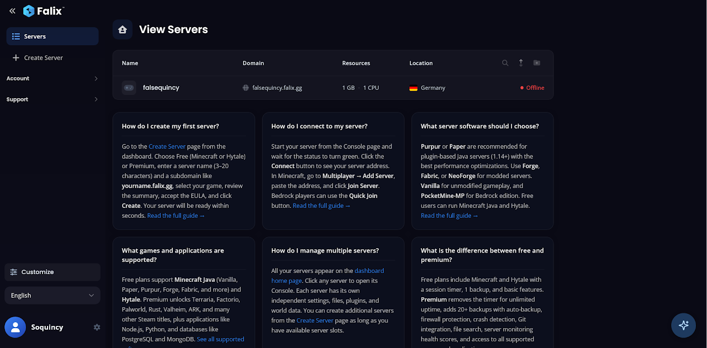
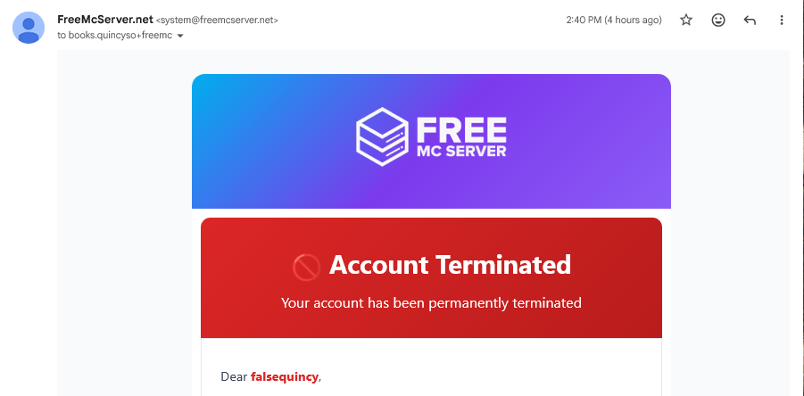
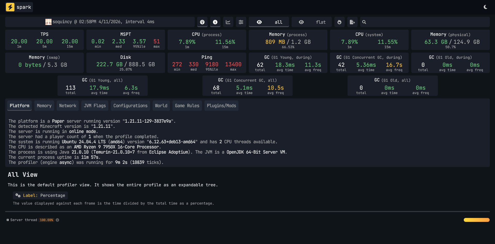
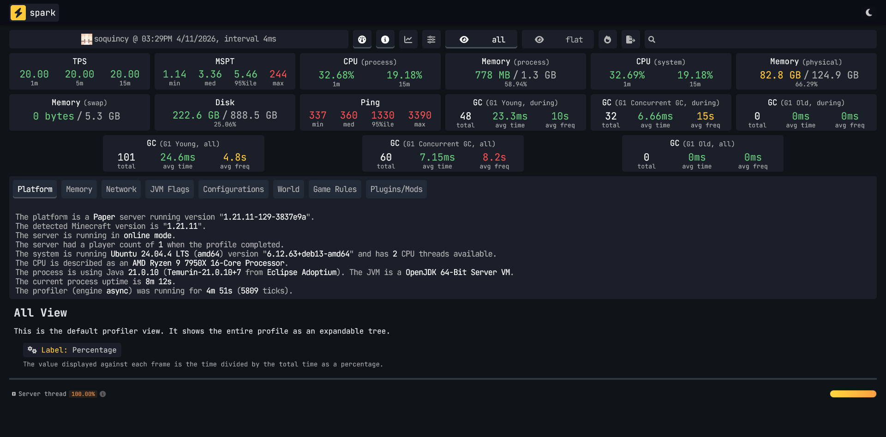

I tested "free" Minecraft server hosting so you don't have to—
and most of it isn't free if you're in the Philippines.
There are dozens of blog posts comparing free Minecraft server hosting. Almost none of them are written from Southeast Asia. This one is.
I'm a paying Minecraft server user. I know what good hosting looks like. These free platforms don't get extra credit just for existing — they get scored against a real rubric, tested from Davao Oriental, Philippines, on fixed broadband infrastructure that has improved significantly since pre-COVID. Not Manila. Not BGC. A provincial connection that's more representative of where most Filipino players actually are.
The Rubric
Every platform was scored on seven categories, each out of 5, for a maximum of 35 points. Cold start times carry a queue penalty on top of the base score.
Categories:
- How "free" is free (including ad experience)
- Geyser / Java–Bedrock parity
- Server software and compatibility
- Cold start time
- SEA availability and latency
- Control panel and UX
- Idle and uptime behavior
Ground rules:
- Fresh account, fresh world, no prior familiarity assumed
- PaperMC, latest stable build, every platform
- Cold start clock begins at the moment I click Start — queue included — and stops when the console confirms the server is joinable
- All latency results reflect a single ISP on fixed broadband in Davao Oriental. Results will vary across providers and locations. This is one data point, not a verdict on Philippine internet as a whole
- Adblock disabled for all testing, including the control panel — not just the landing page
Glossary
- TPS (Ticks Per Second)
- Minecraft's clock runs at 20 ticks per second. Each tick processes everything on the server — movement, mobs, redstone, weather. Stable 20.00 TPS is perfect. Below 15, the game breaks down.
- MSPT (Milliseconds Per Tick)
- How long each tick takes to process. Under 50ms is healthy. A high max MSPT means the server spiked — one tick took much longer than normal.
- Ping / Latency
- Round-trip time between your game and the server, in milliseconds. Under 100ms is comfortable. 200–300ms is playable. Above 400ms, the game starts fighting you.
- Ping 95th Percentile
- The worst ping 95% of the time. More honest than the average — it shows how bad normal play actually gets at its worst moments.
- Packet Loss
- Data that never arrives. Causes rubber-banding, inventory desyncs, and disconnections. Worse than high latency because lost data has to be re-sent.
- GC (Garbage Collection)
- Java periodically cleans up unused memory. During a GC event the server pauses briefly. Frequent or long GC events cause lag spikes even when TPS looks fine.
- Spark
- A Minecraft server profiling plugin that collects all the above data during a live session. Every platform here was profiled under identical conditions — fresh world, PaperMC, no plugins, 10–15 minute session.
- IP Address
- A numerical address identifying a server on the internet. Your game connects to this to reach the server.
- DNS (Domain Name System)
- Translates a server address like play.example.com into an IP address your game can use. Switching to Cloudflare's 1.1.1.1 or Google's 8.8.8.8 can improve routing — it won't fix a bad server location, but it can soften the impact.
- Routing
- The path your data takes between your device and the server. A bad route adds latency that has nothing to do with the server's actual performance.
- Node
- A physical machine in a data center that runs your Minecraft server. Which node you land on directly affects your ping.
- ISP (Internet Service Provider)
- The company providing your internet — Globe, PLDT, Converge, Sky. Your ISP determines your routing paths.
- Subdomain
- A prefix on a domain — like soquincy.qzz.io. Free platforms assign these automatically so your server address is shareable without exposing a raw IP.
- Proxy
- An intermediary server between your connection and the game server. Generally doesn't affect gameplay meaningfully.
- VPN (Virtual Private Network)
- Routes your traffic through a server elsewhere, changing your apparent location. Used in this test on PlayHosting specifically to isolate whether poor ping was a routing problem or a platform problem. It was routing.
- DDoS Protection
- Filters fake traffic floods before they knock your server offline.
- PaperMC
- A high-performance Minecraft server software used as the baseline for every platform in this test.
- Geyser / Floodgate
- Geyser is a plugin that lets Bedrock Edition players — on mobile, console, or Windows — join a Java Edition server. Floodgate removes the requirement for Bedrock players to have a Java account.
- Pterodactyl
- An open-source game server control panel. If a hosting platform's UI looks like Pterodactyl, it probably is — or is built on top of it.
- Geo-restriction
- When a platform limits access based on your country or region. FalixNodes applies this to free server starts without disclosing it before signup.
- Shared CPU / Shared Resources
- Your server runs on hardware shared with other users. Standard on free hosting plans.
- RAM (Memory)
- How much working memory your server has. Free plans typically offer 1–1.7GB.

Platform 1: Minekeep (minekeep.net)
The one that just worked.
Login was straightforward with no ads on the dashboard. Server setup was clean — picking PaperMC from the dropdown was simple, and build #129 for 1.21.11 was the latest stable option available. You can toggle your server between public and private, though all servers are proxied regardless.
The free plan:
- 1GB RAM
- 10 player slots
- 10GB storage
- Shared CPU
- No playtime limits
- No region selection on the free tier. You land on their EU node in Germany, or their NA node in Ashburn — no choice given. For SEA users, that means distance is baked in.
Geyser: Pre-installed. Not in an addons page, not a manual process — pre-installed. Bedrock client connection confirmed working.
Cold start:
- Run 1: 45s 16ms
- Run 2: 38s 63ms
- Average: ~41.5 seconds
Consistent across both runs. That consistency matters as much as the number itself.

Spark Data for Minekeep
TPS is essentially perfect. MSPT median is healthy. Memory utilization at idle is the lowest of any platform tested. The server is not the bottleneck — the Germany node is just far away.
System note: Physical memory on the node sat at 78.6% during the test. Worth monitoring under actual player load.
Ads: None. Zero. Not on the dashboard, not on the console, not on any action.
Console: Full text console with direct command input.
Minekeep — Scores

Platform 2: Aternos (aternos.org)
The veteran that's starting to show its age.
The legend itself, Aternos. Every broke kid's saviour for a mini-SMP.
Login was simple. First-party ads for Exaroton (their paid product) appear immediately — relatively benign compared to what came later, but upselling is on every surface. They offer arcade game modes like parkour and arena on setup, which I skipped. PaperMC requires a manual reinstall via dropdown — it's not the default.
Geyser and Floodgate are both available in the addons section. Aternos bundles them together, which is the right call.
There's a RAM boost available via a Medal sponsorship. I did not take it.
Cold start:
- Run 1: 1m 0s 07ms
- Run 2: 26s 91ms
- Average: ~43.5 seconds — but the variance is the real story
A 34-second gap between runs means you can't predict what a new user gets. Run 1 was likely queue or node spin-up influenced. Run 2 is fast. Neither is guaranteed.

Spark Data for Aternos
TPS looks clean on paper. But that MSPT max of 218ms is not a blip — it's a spike, and I felt it during the session. GC Young averaging 38.4ms per collection is significantly worse than Minekeep's 15.1ms. The garbage collector is working harder.
Memory at 87% utilization on idle with no players is tight. A few active players would push that further.
The console situation: There is no text console. It's GUI-only. For anyone who needs to run commands quickly, that's a real limitation and a step down from every other platform in this test.
Ads: First-party Exaroton ads throughout. Third-party ads appeared in the console area. One of those is annoying. Both together is hostile.
Physical location: Never disclosed. Ping suggests US East or a well-routed EU node — 227ms median is actually the best of the testable platforms from Davao Oriental.
Aternos — Scores

Platform 3: FalixNodes (falixnodes.net)
Blocked at the door.
Onboarding is polished. More options than Minekeep upfront — MOTD, game mode, difficulty all configurable during setup. You can pick from a list of subdomains. The platform markets itself heavily on hardware specs: Ryzen 9 7950X3D, DDR5 RAM, NVMe storage, enterprise DDoS protection.
An adblock detector triggered despite uBlock being disabled. Switching from Firefox to Vivaldi resolved it — the detector failed to correctly identify that adblock was already off. The platform couldn't detect my browser extension properly, but had no trouble detecting my country.
Because when I hit Start:
[Falix]: Server is starting up...
[Falix]: Server is starting up...
[Falix]: Server starts are not available in your region on the free plan. Please upgrade to a paid plan to start your server.
That's a hard regional block. No warning before signup. No map. No country list. Their free hosting page states "Data centers across Europe, North America, South America, Asia, and Australia" — but gives zero specifics on which countries can actually start a free server. Their FAQ references an eligibility list that supposedly lives on the free hosting page. It doesn't exist.
A VPN does not bypass this either.
You complete full onboarding, pick your settings, and hit a wall. For a Filipino user — or any Southeast Asian user — FalixNodes' free plan does not exist.
FalixNodes — Scores

Platform 4: freemcserver.net
Banned for nothing.
No SSO login. Manual signup only. Before you get anywhere, a consent wall with 919 vendors greets you — no "deny all" button, so opting out requires manually disabling legitimate interest claims one by one. That alone tells you how this platform treats its users.
Choosable server regions: EU (Finland) and Canada. I picked Finland.
On selecting Paper 1.21.11, an unprompted offer appeared for a "performance boost" — an additional 200MB RAM bringing the total to 1.7GB, tied to a Paper version selection. A Tebex sponsor integration was also offered during setup. Both declined.
Server creation took 15 seconds. Then:
"Server Expiration: 3 hours, 58 minutes, 58 seconds. Server will expire after this timer runs out regardless if there are players or not. Renew the server to keep it online."
A 4-hour hard expiry timer — on active servers, with active players — never disclosed before or during signup. That is a core feature limitation buried after onboarding.
Then, before I could run a single test:
"You have been banned. Reason: Usage of VPN (VA-VPN)"
"You can not appeal a ban that was issued less than 1 hour ago. Please wait a bit and try again."
I was not using a VPN. The ban was a false positive — likely triggered by my ISP's IP range or a previous user on the same connection. The platform's own rules explicitly prohibit VPNs, which is a reasonable policy. Wrongfully flagging a legitimate user and then blocking appeal for an hour is not.
Third-party ads were visible before the ban even landed.
freemcserver.net — Scores

Platform 5: Play Hosting
The best hardware in the test. The worst routing from the province.
Simple email signup, no SSO, no verification required. There's a queue to start — present but not long enough to be maddening. The UI is Pterodactyl-based, which anyone familiar with paid hosting will recognize immediately. It's clean, functional, and doesn't require a tutorial.
Geyser is offered as an auto-install option during Paper setup. I may have missed the button — either way, it didn't pre-configure. Manual installation was required, which is a known issue documented in their own docs. It works, but it's not seamless.
Cold start:
- Run 1: 17s 33ms
- Run 2: 15s 57ms
- Average: ~16.5 seconds
The fastest cold start in the entire test. It's not close.

Spark data for Play Hosting (VPN)
The server itself is the best performer in this test — perfect TPS, lowest MSPT median, healthy memory. But that 95th percentile ping of 9,180ms is not lag. That's the connection momentarily dying.
The VPN reduced catastrophic spikes significantly — 9,000ms+ became 1,300ms. Median barely moved. This confirms the issue is SEA routing, not the platform. And especially not a hardware problem.
A DNS change (Cloudflare's 1.1.1.1 or Google's 8.8.8.8) may also reduce routing issues for SEA players. It's a two-minute fix — but it's a fix that shouldn't be necessary, and most casual users won't know to look for it.
The no-VPN numbers are the primary score. That's the experience a Filipino user gets by default.
Ads: None observed.
Console: Full text console with direct command input.
PlayHosting — Scores
The Platforms That Didn't Make It
Minefort — Free plan does not exist in the Philippines. All options are paid on signup. No testing possible.
Final Scoreboard
| Platform | Score | SEA-Viable? |
|---|---|---|
| Minekeep | 31/35 | Yes |
| PlayHosting | 26/35 | With caveats |
| Aternos | 23/35 | Yes |
| freemcserver.net | 3/35 | Maybe — false banned |
| FalixNodes | 1/35 | No — geo-blocked |
| Minefort | N/A | No — paid only in PH |
The Real Finding
Three out of five platforms failed Southeast Asian users before a single block was placed:
- FalixNodes geo-blocks free server starts with no prior disclosure
- freemcserver.net issued a false VPN ban with a mandatory cooldown before appeal
- Minefort doesn't offer a free plan in the Philippines at all
This isn't a coincidence. It's a pattern. "Free" Minecraft hosting is largely designed for Western users, with Southeast Asia either deprioritized, geo-blocked, or treated as a fraud risk by default. The infrastructure argument for this is weaker than it was five years ago. Davao Oriental's internet has improved substantially since pre-COVID. The platforms haven't adjusted their policies to match.
The Recommendation
If you're in the Philippines and want a free Minecraft server that works out of the box: use Minekeep.
It's not the flashiest platform. Software options are limited to three. You don't get a region choice. But it has no ads, no grind, no expiry timers, pre-installed Geyser, a full text console, consistent cold starts, and the most honest free plan of anything tested here. For a small SMP with friends, it does everything it needs to do.
PlayHosting is the better platform on hardware — and if you're on a well-routed connection or willing to set a DNS resolver, it's worth trying. The cold start alone is impressive. But the default routing experience from Davao Oriental rules it out as a primary recommendation without caveats.
Aternos works, and its software compatibility is the widest of any platform tested. But 87% memory utilization at idle, GUI-only console, inconsistent cold starts, and ads on every surface make it harder to recommend when Minekeep exists.
The others aren't worth your time — at least not from here.
AI Disclosure: Writing this blog post was assisted with Claude Sonnet 4.6. Data has been verified.